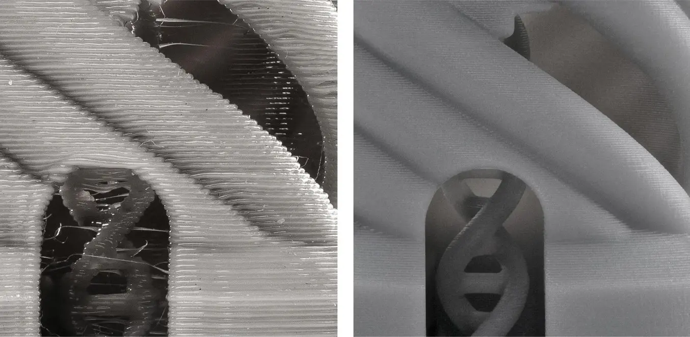

I když je nejrozšířenější technologií pro 3D tisk stále metoda FDM (při které se taví plastová struna, která se po vrstvách nanáší a tvoří tak výsledný výtisk), je v dnešní době již velmi rozšířenou metodou i technologie MSLA (masked stereolithography), fungující na principu fotopolymeru citlivého na UV světlo, který při ozáření tvrdne.
Rozdíl tiskových metod je zásadní. Při tisku na klasické FDM tiskárně se musí celý tisknutelný tvar „nakreslit“, doba tisku je tedy závislá jak na výšce, tak i tvaru a objemu celého tisknutého objektu. Resinové tiskárny na rozdíl od toho tisknou celý objekt vrstvu po vrstvě, kdy je vždy každá z nich na nějaký expoziční čas ozářena, následně odlepena od filmu PFA, který se nachází na spodku vaničky na resin, a zvednuta o výšku jedné tiskové vrstvy nahoru (typicky 30–100 mikronů). Doba potřebná pro tisk tedy závisí pouze na parametrech tisku a výšce nejvyššího objektu na tiskové ploše. Tímto principem je technologie MSLA schopna dosáhnout mnohem větších detailů tisku oproti technologii FDM a bývá často využívána pro velmi detailní a malé modely, jako je například hobby výroba figurek do stolních her nebo tisk zubních protéz.

Při výrobě letošních upomínkových předmětů se lektoři rozhodli vymodelovat velmi detailní modely a ty poté vytisknout na nově pořízené resinové tiskárně Saturn 4 Ultra 16k. V přiloženém modelu můžete vidět přibližný tvar daného upomínkového předmětu: https://drive.google.com/file/d/1FwQUWsdqHTvnXckxIgd_jiMAZKsM6QGv
Pro tisk lektoři použijí výšku vrstvy 50 mikronů, nastaví počet burn in layers na 10, každou z nich na 30 s, dobu expozice standardní vrstvy na 2 s, čas potřebný k odlepení (lift & retract) na 3 s. Uvažují nad dvěma možnostmi tisku: na plocho (A) a na výšku (B). Při obou variantách se od sebe modely musí nacházet alespoň jeden centimetr. Po každém tisku je nutné tiskovou plochu (a modely) umýt v lázni isopropylalkoholu – proces zabere zhruba 900 sekund a musí být proveden před opětovným tiskem. Každý model se také musí vytvrdit v separátní vytvrzovací stanici pod UV světlem – proces zabere 300 sekund na každých deset vytištěných modelů (a bude proveden po dokončení tisku všech modelů). Přebytečné modely není potřeba zpracovávat.
Lektory zajímá, která z možností A a B je pro 100 výtisků výhodnější a o kolik bude rychlejší.